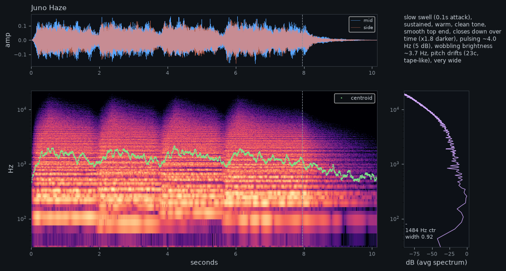

Juno Haze Pad
Hazy 80s polysynth chords: saw plus a slowly breathing pulse wave, a 4-pole filter that opens with each chord, thick chorus and a tape wobble you can dial in. Sits under a vocal or a guitar.

What the ears reported
- slow swell (0.1s attack)
- sustained
- warm
- clean tone
- smooth top end
- closes down over time (x1.8 darker)
- pulsing ~4.0 Hz (5 dB)
- wobbling brightness ~3.7 Hz
- pitch drifts (23c, tape-like)
- very wide
- Pitch
- -
- Centroid
- 1484 Hz
- Attack
- 122 ms
- Width
- 0.92
Controls, measured
Each clip plays the same notes with the control at 0, ⅓, ⅔ and 1 (velocity from 0.3 to 1). The line above each clip is what the ears measured between the two ends.
- M1 BRIGHT0 -> 1
brightness 943 -> 2237 Hz (x2.37); top-end slope -27 -> -8 dB/oct; attack 122 -> 81 ms; pitch wobble 21c -> 14c; brightness wobble ±21% -> ±44%; onset brightness 422 -> 1391 Hz
- M2 WARBLE0 -> 1
pitch wobble 17c -> 27c; spectral-envelope peaks [192] -> [200, 1217] Hz
- M3 SWELL0 -> 1
level -30 -> -42 dB; brightness 1464 -> 1024 Hz (x0.70); top-end slope -18 -> -26 dB/oct; attack 44 -> 690 ms; pitch wobble 19c -> 0c; auto-pan 1.4 Hz/7 dB -> 0.0 Hz/0 dB; spectral-envelope peaks [296, 583] -> [200, 591] Hz; level 300 ms after release -11 -> -1 dB; pulsing 3.1 Hz/5 dB -> 0.0 Hz/0 dB; brightness wobble ±31% -> ±0%; onset brightness 625 -> 982 Hz
- M4 SPACE0 -> 1
level -29 -> -32 dB; auto-pan 1.3 Hz/7 dB -> 0.0 Hz/5 dB; spectral-envelope peaks [296] -> [195, 600, 1271] Hz; level 300 ms after release -11 -> -8 dB; brightness wobble ±26% -> ±15%
- Mod wheel0 -> 1
attack 99 -> 142 ms; pitch wobble 15c -> 47c @ 5.2 Hz; spectral-envelope peaks [231, 583, 1347] -> [296] Hz; level 300 ms after release -11 -> -8 dB; brightness wobble ±28% -> ±18%
- Aftertouch0 -> 1
brightness 1542 -> 2001 Hz (x1.30); top-end slope -18 -> -10 dB/oct; pitch wobble 20c -> 13c; spectral-envelope peaks [296, 600, 1183] -> [192, 1200] Hz; brightness wobble ±19% -> ±39%; onset brightness 688 -> 1201 Hz
- Velocity0.3 -> 1
level -31 -> -28 dB; brightness 1242 -> 1600 Hz (x1.29); top-end slope -20 -> -15 dB/oct; pitch wobble 23c -> 17c; spectral-envelope peaks [200, 583, 1217] -> [200] Hz; brightness wobble ±39% -> ±14%
Full listening report
== Juno Haze - first note alone == Character: slow swell (0.1s attack), sustained, warm, clean tone, smooth top end, closes down over time (x1.8 darker), pulsing ~4.0 Hz (5 dB), wobbling brightness ~3.7 Hz, pitch drifts (23c, tape-like), very wide Level: peak -13.1 dBFS, rms -31.7 dBFS, crest 18.6 dB | Envelope: attack 122 ms (half-level in 77 ms), peak at 0.34s, sustain -1 dB Pitch: no single clear pitch (chord, noise or inharmonic; clarity 0.65); see partials Strongest partials: 110Hz A2-5c (-0dB); 221Hz A3+4c (-1dB); 261Hz C4-2c (-0dB); 330Hz E4+3c (0dB); 441Hz A4+3c (-5dB); 520Hz C5-10c (-7dB); 659Hz E5-1c (-4dB); 983Hz B5-8c (-10dB) Spectrum: centroid 1484 Hz (start 1252 -> end 685), 85% rolloff 1001 Hz, flatness 0.007, harmonicity 0.76, top-end slope -17.9 dB/oct (2-16 kHz) Shape: spectral-envelope peaks 296, 583 Hz; level 300 ms after release -9 dB re peak Roughness (20-150 Hz beating, held part): 0.140, worst near 500 Hz (pure tone ~0, two sines 70 Hz apart ~0.32) Energy by band: sub 0.0%, bass 30.3%, low-mid 54.4%, mid 14.5%, presence 0.7%, air 0.0% Motion: level pulses at 3.98 Hz (4.8 dB p-p); brightness wobbles at 3.73 Hz (±21%); pitch wobbles 23 cents p-p, irregular drift (wow / random) Stereo: width 0.92 (side/mid), L/R correlation 0.084 Timeline (t: level dB, centroid Hz): 0.0s:-29/1314 0.38s:-28/1782 0.78s:-30/1709 1.16s:-29/1430 1.56s:-29/1184 1.95s:-37/928 2.33s:-45/788 2.73s:-54/889 3.11s:-59/727 3.51s:-65/677 Phrase: 10.2s, peak -11.8 dBFS, rms -29.4 dBFS, centroid 1417 Hz, width 0.876, partials: 106Hz G#2+44c; 196Hz G3+2c; 223Hz A3+21c; 257Hz C4-33c; 293Hz D4-5c; 337Hz E4+36c; 585Hz D5-7c; 657Hz E5-6c Expression check (probe note, low -> high): M1 BRIGHT (0 -> 1): brightness 943 -> 2237 Hz (x2.37); top-end slope -27 -> -8 dB/oct; attack 122 -> 81 ms; pitch wobble 21c -> 14c; brightness wobble ±21% -> ±44%; onset brightness 422 -> 1391 Hz M2 WARBLE (0 -> 1): pitch wobble 17c -> 27c; spectral-envelope peaks [192] -> [200, 1217] Hz M3 SWELL (0 -> 1): level -30 -> -42 dB; brightness 1464 -> 1024 Hz (x0.70); top-end slope -18 -> -26 dB/oct; attack 44 -> 690 ms; pitch wobble 19c -> 0c; auto-pan 1.4 Hz/7 dB -> 0.0 Hz/0 dB; spectral-envelope peaks [296, 583] -> [200, 591] Hz; level 300 ms after release -11 -> -1 dB; pulsing 3.1 Hz/5 dB -> 0.0 Hz/0 dB; brightness wobble ±31% -> ±0%; onset brightness 625 -> 982 Hz M4 SPACE (0 -> 1): level -29 -> -32 dB; auto-pan 1.3 Hz/7 dB -> 0.0 Hz/5 dB; spectral-envelope peaks [296] -> [195, 600, 1271] Hz; level 300 ms after release -11 -> -8 dB; brightness wobble ±26% -> ±15% Mod wheel (0 -> 1): attack 99 -> 142 ms; pitch wobble 15c -> 47c @ 5.2 Hz; spectral-envelope peaks [231, 583, 1347] -> [296] Hz; level 300 ms after release -11 -> -8 dB; brightness wobble ±28% -> ±18% Aftertouch (0 -> 1): brightness 1542 -> 2001 Hz (x1.30); top-end slope -18 -> -10 dB/oct; pitch wobble 20c -> 13c; spectral-envelope peaks [296, 600, 1183] -> [192, 1200] Hz; brightness wobble ±19% -> ±39%; onset brightness 688 -> 1201 Hz Velocity (0.3 -> 1): level -31 -> -28 dB; brightness 1242 -> 1600 Hz (x1.29); top-end slope -20 -> -15 dB/oct; pitch wobble 23c -> 17c; spectral-envelope peaks [200, 583, 1217] -> [200] Hz; brightness wobble ±39% -> ±14%
How it was built
Wavetables: osc_2: 3 frame(s) · 53 settings · preset file Juno Haze.vital
- env_2 → filter_1_cutoff +22st
- velocity → filter_1_cutoff +9st
- lfo_3 → osc_2_wave_frame 0.4 ±
- macro_control_1 → filter_1_cutoff +30st
- random_1 → voice_tune 0.0 ±
- macro_control_2 → mod:wow 0.25
- macro_control_3 → env_1_attack 0.35
- macro_control_3 → env_2_attack 0.3
- macro_control_3 → env_1_release 0.25
- macro_control_4 → reverb_dry_wet 0.4
- macro_control_4 → chorus_dry_wet 0.2
- lfo_1 → voice_tune 0.0 ±
- mod_wheel → mod:vibrato 0.12
- aftertouch → filter_1_cutoff +12st
Patch spec (JSON)
{
"name": "Juno Haze",
"style": "Pad",
"description": "Hazy 80s polysynth chords: saw plus a slowly breathing pulse wave, a 4-pole filter that opens with each chord, thick chorus and a tape wobble you can dial in. Sits under a vocal or a guitar.",
"wavetables": {
"osc_2": {
"name": "PWM",
"frames": [
{
"shape": "pulse",
"width": 0.5
},
{
"shape": "pulse",
"width": 0.3
},
{
"shape": "pulse",
"width": 0.14
}
]
}
},
"lfos": {
"lfo_1": {
"shape": "sine"
},
"lfo_3": {
"shape": "triangle"
}
},
"macros": {
"1": {
"name": "BRIGHT",
"value": 0.4
},
"2": {
"name": "WARBLE",
"value": 0.25
},
"3": {
"name": "SWELL",
"value": 0.2
},
"4": {
"name": "SPACE",
"value": 0.4
}
},
"params": {
"osc_1_level": 0.55,
"osc_1_unison_voices": 4,
"osc_1_unison_detune": "12%",
"osc_1_stereo_spread": "80%",
"osc_2_on": "On",
"osc_2_level": 0.45,
"osc_2_unison_voices": 2,
"osc_2_unison_detune": "6%",
"osc_2_wave_frame": 128,
"osc_2_destination": "FILTER 1",
"filter_1_on": "On",
"filter_1_model": "Analog",
"filter_1_style": "24dB",
"filter_1_cutoff": "700Hz",
"filter_1_resonance": "14%",
"filter_1_keytrack": "45%",
"env_1_attack": "60ms",
"env_1_decay": "1.5s",
"env_1_sustain": 0.85,
"env_1_release": "900ms",
"env_2_attack": "250ms",
"env_2_decay": "2.2s",
"env_2_sustain": 0.35,
"env_2_release": "900ms",
"lfo_1_sync": "Seconds",
"lfo_1_frequency": "5.2Hz",
"lfo_1_delay_time": "0.3s",
"lfo_1_fade_time": "0.5s",
"lfo_3_sync": "Seconds",
"lfo_3_frequency": "0.35Hz",
"random_1_style": "Perlin",
"random_1_sync": "Seconds",
"random_1_frequency": "1.3Hz",
"chorus_on": "On",
"chorus_voices": 1,
"chorus_frequency": "0.55Hz",
"chorus_mod_depth": "70%",
"chorus_feedback": "0%",
"chorus_dry_wet": "50%",
"chorus_delay_1": "3.5ms",
"chorus_delay_2": "6ms",
"reverb_on": "On",
"reverb_dry_wet": "12%",
"reverb_decay_time": "3.5s",
"reverb_size": "70%",
"eq_on": "On",
"eq_low_cutoff": "140Hz",
"eq_low_gain": "-5dB",
"eq_high_cutoff": "8kHz",
"eq_high_gain": "-4dB",
"polyphony": 8,
"volume": "-14dB",
"velocity_track": "20%"
},
"mods": [
{
"source": "env_2",
"dest": "filter_1_cutoff",
"amount": "+22st"
},
{
"source": "velocity",
"dest": "filter_1_cutoff",
"amount": "+9st"
},
{
"source": "lfo_3",
"dest": "osc_2_wave_frame",
"amount": 0.4,
"bipolar": true
},
{
"source": "macro_control_1",
"dest": "filter_1_cutoff",
"amount": "+30st"
},
{
"source": "random_1",
"dest": "voice_tune",
"amount": 0.0,
"bipolar": true,
"id": "wow"
},
{
"source": "macro_control_2",
"dest": "mod:wow",
"amount": 0.25
},
{
"source": "macro_control_3",
"dest": "env_1_attack",
"amount": 0.35
},
{
"source": "macro_control_3",
"dest": "env_2_attack",
"amount": 0.3
},
{
"source": "macro_control_3",
"dest": "env_1_release",
"amount": 0.25
},
{
"source": "macro_control_4",
"dest": "reverb_dry_wet",
"amount": 0.4
},
{
"source": "macro_control_4",
"dest": "chorus_dry_wet",
"amount": 0.2
},
{
"source": "lfo_1",
"dest": "voice_tune",
"amount": 0.0,
"bipolar": true,
"id": "vibrato"
},
{
"source": "mod_wheel",
"dest": "mod:vibrato",
"amount": 0.12
},
{
"source": "aftertouch",
"dest": "filter_1_cutoff",
"amount": "+12st"
}
],
"play": {
"notes": [
{
"note": "A3",
"start": 0.0,
"dur": 1.7
},
{
"note": "C4",
"start": 0.0,
"dur": 1.7
},
{
"note": "E4",
"start": 0.0,
"dur": 1.7
},
{
"note": "A2",
"start": 0.0,
"dur": 1.7,
"vel": 0.6
},
{
"note": "A3",
"start": 1.85,
"dur": 1.7
},
{
"note": "C4",
"start": 1.85,
"dur": 1.7
},
{
"note": "F4",
"start": 1.85,
"dur": 1.7
},
{
"note": "F2",
"start": 1.85,
"dur": 1.7,
"vel": 0.6
},
{
"note": "G3",
"start": 3.7,
"dur": 1.7
},
{
"note": "C4",
"start": 3.7,
"dur": 1.7
},
{
"note": "E4",
"start": 3.7,
"dur": 1.7
},
{
"note": "C3",
"start": 3.7,
"dur": 1.7,
"vel": 0.6
},
{
"note": "G3",
"start": 5.55,
"dur": 2.4
},
{
"note": "B3",
"start": 5.55,
"dur": 2.4
},
{
"note": "D4",
"start": 5.55,
"dur": 2.4
},
{
"note": "G2",
"start": 5.55,
"dur": 2.4,
"vel": 0.6
}
],
"tail": 2.2,
"vel": 0.7
},
"tour": {
"chord": [
"A2",
"A3",
"C4",
"E4"
],
"dur": 1.6,
"tail": 0.9,
"vel": 0.7
}
}